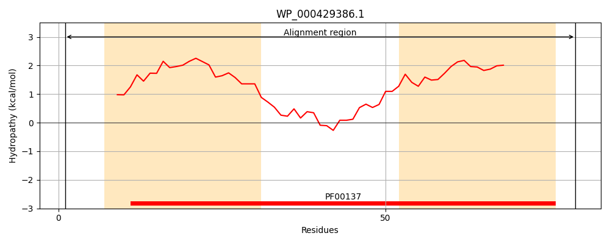
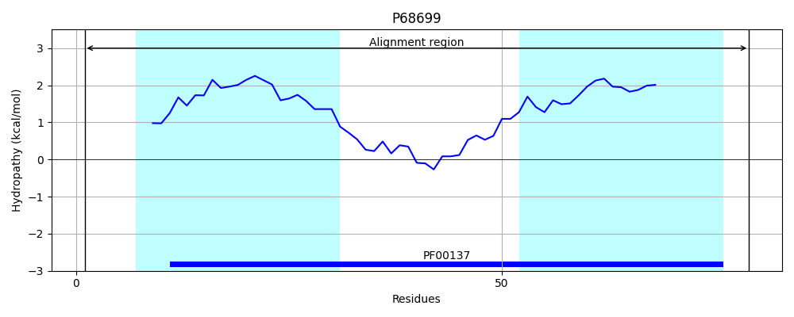
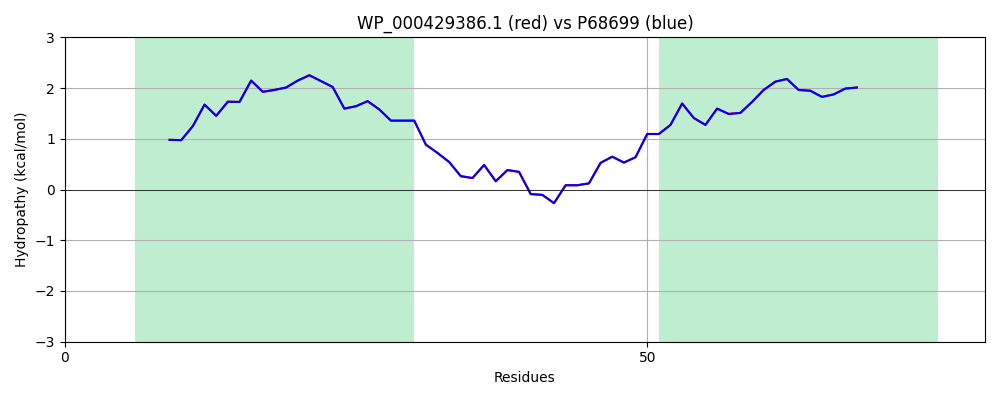

Hit Accession: P68699
Hit TCID: 3.A.2.1.1
Hit Description: gnl|BL_ORD_ID|11250 gnl|TC-DB|P68699|3.A.2.1.1 ATP synthase C chain - Escherichia coli.
Mach Len: 79
e:0.000000
Query TMS Count : 2
Hit TMS Count: 2
TMS-Overlap Score: 2.500000
Predicted Substrates:CHEBI:5584;hydron
BLAST Alignment:
| Protein Hydropathy Plots: | |
|---|---|
|  |  |
Pairwise Alignment-Hydropathy Plot: | |
|  | |